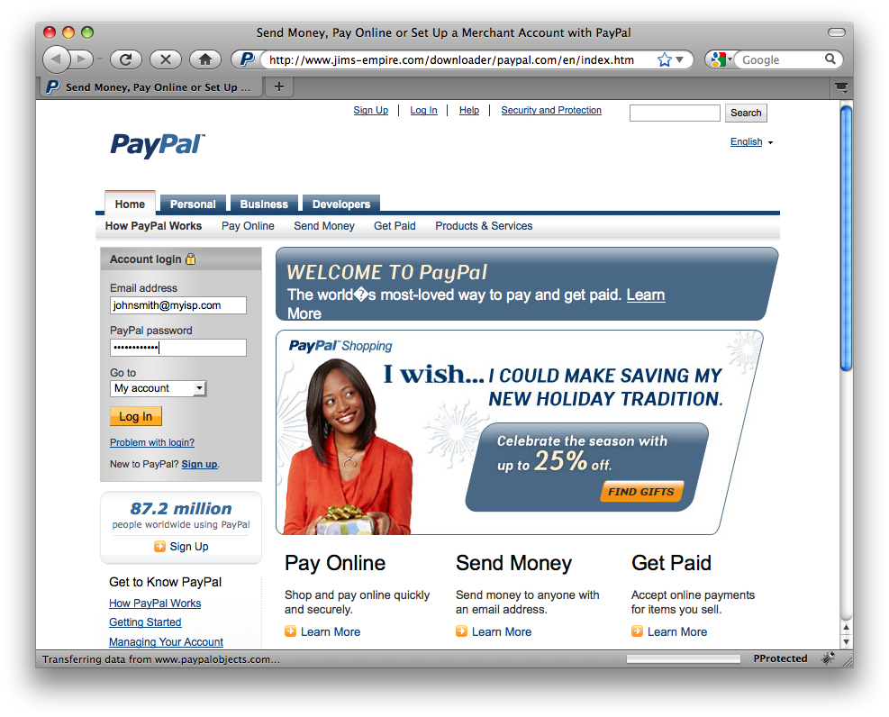
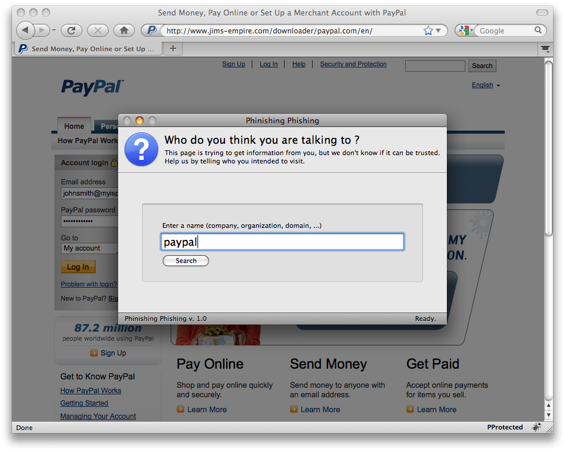
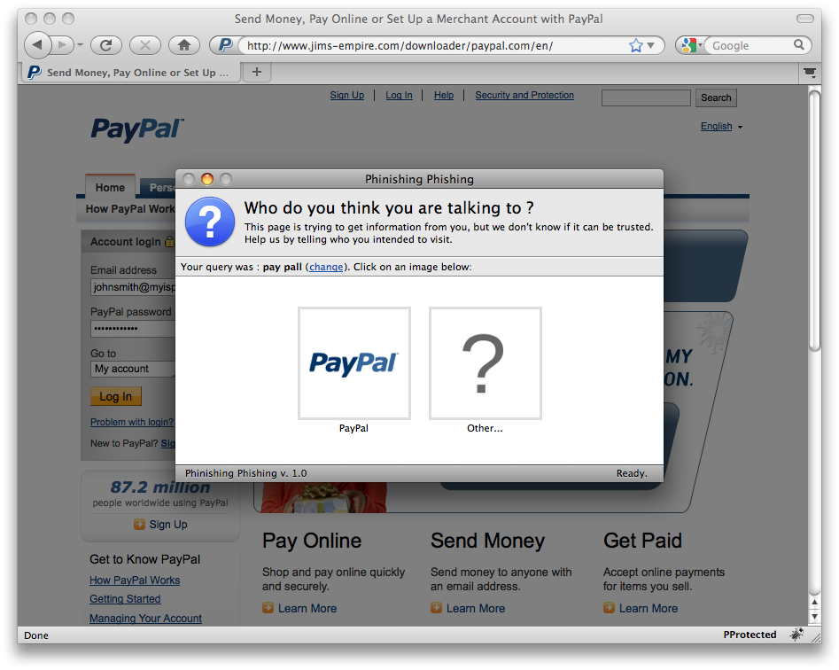
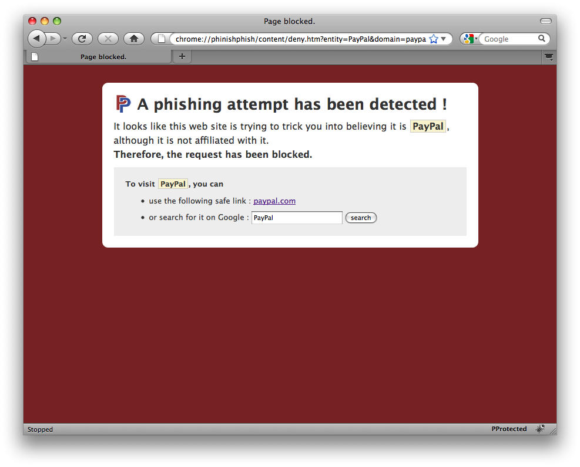

Phinishing Phishing
This page is under active development, you're invited to check back in a
few weeks.
Firefox extension
Here are some screenshots of the extension, and basic explanations on how
it is used. Most of the time, you don't feel its presence. It is triggered
only when a web site is not "known" (i.e., not in a list of millions of "good"
sites).
- You visit a webpage, thinking it is PayPal. But if you look carefully,
the domain name (in the address bar) has nothing to do with PayPal!
- When you submit the login information, a new window pops up and asks you
to tell it what your intention is.
- You confirm that you intended to visit PayPal by clicking on the
logo.
- The extension understands that the current web page is looking like
PayPal, but knows that it is not the legitimate site. Therefore, the request
is blocked, and a warning is shown.



